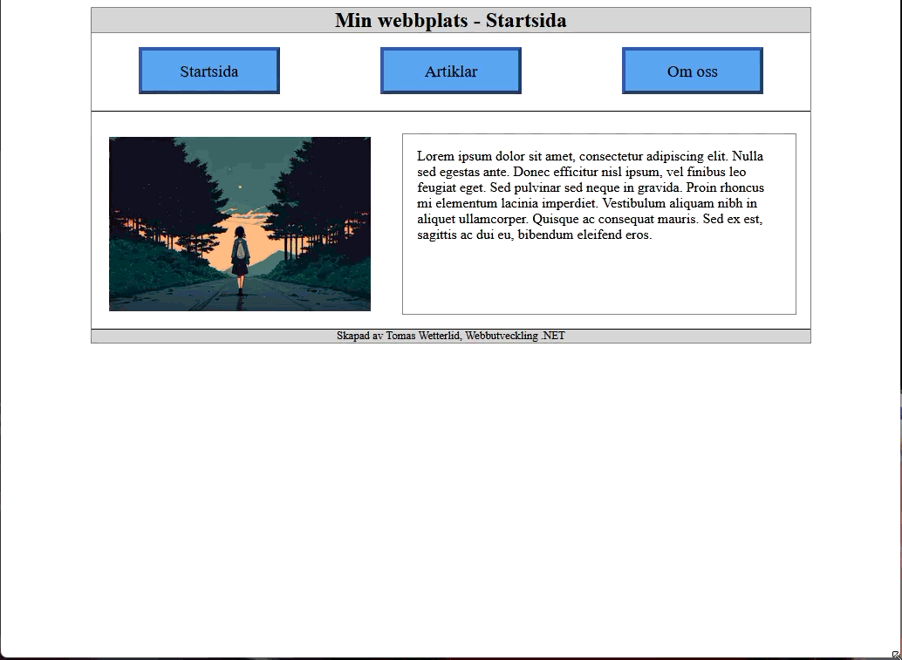
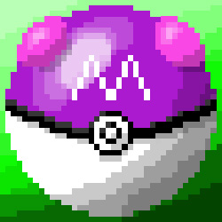
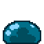
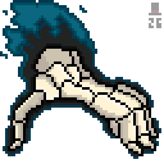
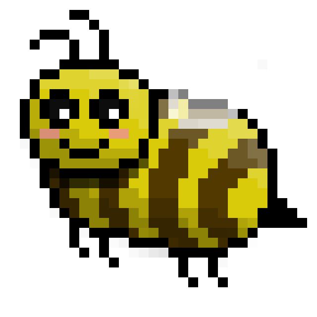

System developer-ITCM AB
- Developer for system used to coordinate internships for students.
- Web based .NET system built in HTML, CSS and C# with Blazor as framework.
- Technical support for the system was included in the job.
Aspiring web developer, programmer and pixel artist

I'm Tomas! I was born in 1997 in Stockholm Sweden and i'm currently studying to become a .NET Web Developer.
If you need a simple website or some pixel art made you've come to the right place!
I have Experience in several aspects of web development such as:
On top of that I have basic knowledge of the frameworks Blazor and Bootstrap
I am currently studying to become a .NET Web Developer at Campus Värnamo Sweden.
Campus Värnamo is partnered- and work closely together with Jönköping University.
This website started as a project from here.
I finished my Swedish Gymnasium degree at Komvux Hjo in 2025.
The main focus was to get as much IT knowledge as possible, thus i read courses such as:
Programming 1, Programming 2, Web development 1, Information and Communication, Digital creation 1 etc.
One of our early assignments had to do with responsiveness and layout.
Here we worked with the now common philosophy "Mobile First" where you build your website to first look good on mobile.
When that's done you make it look good for other screen sizes like tablets and desktops.

You can press here to open the page in a new tab.
Be mindful that parts of the website is in Swedish.
I've always been fascinated with the concept of pixel art ever since i was a child.
Me starting to make pixel art didn't begin until i was an adult though.
It's mostly been sprites, but the background you see on this website is also made by me.
Here are a few select pixel art pieces i've made.



